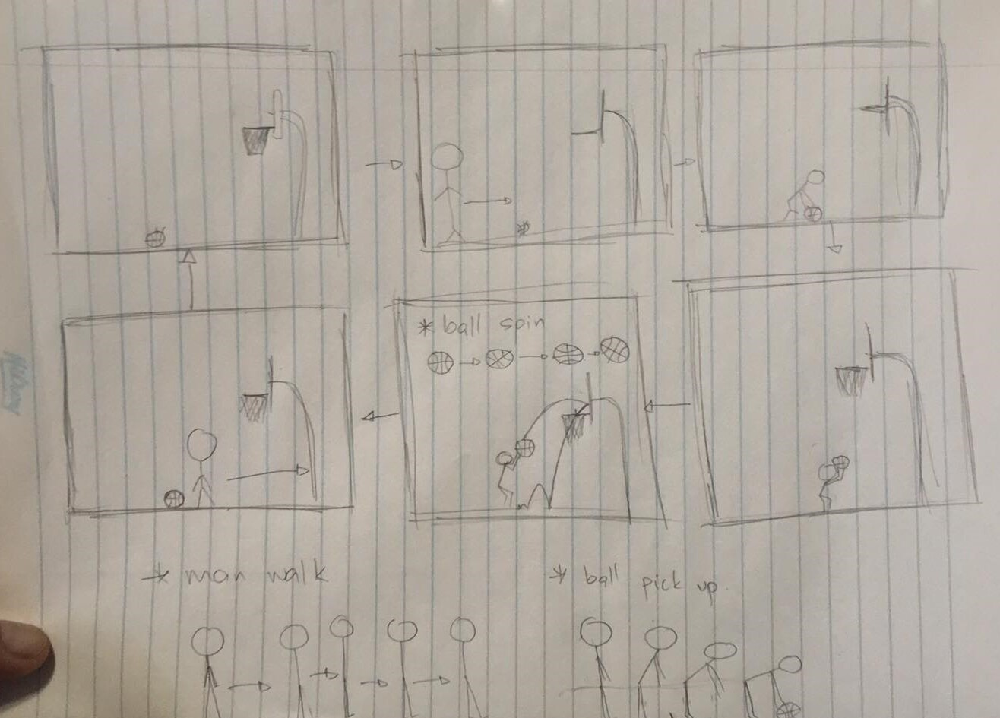
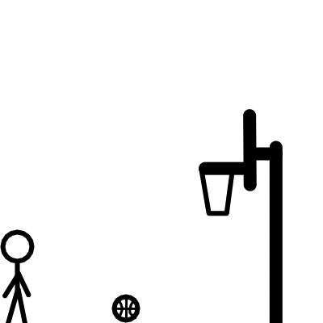

This short animation will show a combination of human walking and ball bouncing. I used Krita as the tool to make each frames.
As shown on the rough sketch below, The original idea was to make the end frame, the exact same as the starting frame to create a smooth transition when looping through. However changes were made during the making of the frames.
There are a total of 47 frames which can be found here.
|  |
|  |